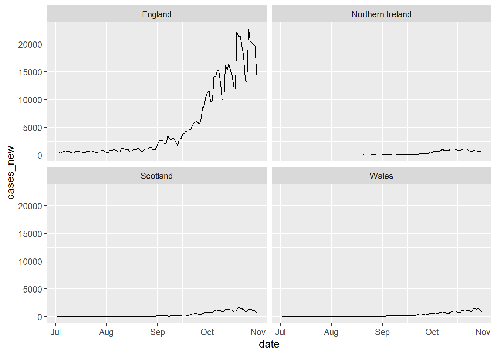
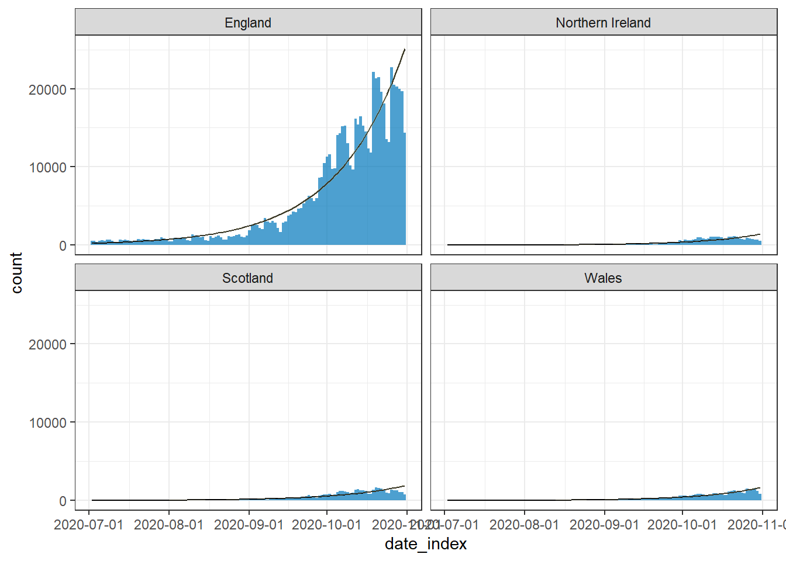

# Calculate the daily growth rate of an outbreak stratified by groups
# Load required packages
library(tidyverse)
library(covidregionaldata)
library(incidence2)
library(i2extras)
# Load covid outbreak data
raw_dat <-
covidregionaldataUK %>%
as_tibble() %>%
filter(magrittr::is_in(region,c("England", "Scotland",
"Northern Ireland", "Wales"))) %>%
filter(date > lubridate::ymd(20200701)) %>%
filter(date < lubridate::ymd(20201101))
# Read covid outbreak data
raw_dat# A tibble: 488 × 13
date region region_code cases_new cases_total deaths_new deaths_total
<date> <chr> <chr> <dbl> <dbl> <dbl> <dbl>
1 2020-07-02 England E92000001 565 245041 40 36172
2 2020-07-02 Norther… N92000002 3 5646 0 552
3 2020-07-02 Scotland S92000003 13 18297 0 2546
4 2020-07-02 Wales W92000004 28 16647 3 1532
5 2020-07-03 England E92000001 543 245584 26 36198
6 2020-07-03 Norther… N92000002 8 5654 2 554
7 2020-07-03 Scotland S92000003 6 18303 1 2547
8 2020-07-03 Wales W92000004 19 16666 0 1532
9 2020-07-04 England E92000001 386 245970 31 36229
10 2020-07-04 Norther… N92000002 1 5655 0 554
# ℹ 478 more rows
# ℹ 6 more variables: recovered_new <dbl>, recovered_total <dbl>,
# hosp_new <dbl>, hosp_total <dbl>, tested_new <dbl>, tested_total <dbl># Plot the raw data
raw_dat %>%
ggplot() +
aes(x = date, y = cases_new) +
geom_line() +
facet_wrap(vars(region))
# Convert the data to an incidence object stratified by groups
dat_group <-
incidence2::incidence(
x = raw_dat,
counts = "cases_new",
date_index = "date",
interval = "day",
groups = "region"
)
dat_group# incidence: 488 x 4
# count vars: cases_new
# groups: region
date_index region count_variable count
* <date> <chr> <fct> <dbl>
1 2020-07-02 England cases_new 565
2 2020-07-02 Northern Ireland cases_new 3
3 2020-07-02 Scotland cases_new 13
4 2020-07-02 Wales cases_new 28
5 2020-07-03 England cases_new 543
6 2020-07-03 Northern Ireland cases_new 8
7 2020-07-03 Scotland cases_new 6
8 2020-07-03 Wales cases_new 19
9 2020-07-04 England cases_new 386
10 2020-07-04 Northern Ireland cases_new 1
# ℹ 478 more rows# Model the incidence
out_group <-
i2extras::fit_curve(
dat_group,
model = "poisson",
alpha = 0.05
)
# Print the model result
i2extras::growth_rate(out_group)# A tibble: 4 × 10
count_variable region model r r_lower r_upper growth_or_decay time
<fct> <chr> <lis> <dbl> <dbl> <dbl> <chr> <dbl>
1 cases_new England <glm> 0.0385 0.0384 0.0386 doubling 18.0
2 cases_new Northern Ir… <glm> 0.0438 0.0433 0.0443 doubling 15.8
3 cases_new Scotland <glm> 0.0406 0.0402 0.0410 doubling 17.1
4 cases_new Wales <glm> 0.0447 0.0443 0.0452 doubling 15.5
# ℹ 2 more variables: time_lower <dbl>, time_upper <dbl># Plot the model result with prediction intervals
plot(out_group, ci = FALSE, pi = TRUE)
# Read plot documentation for an incidence2_fit object
# ?plot.incidence2_fit